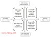

Vì sao con người luôn khao khát được yêu thương? Con người có thể sống không cần tình thương? Năm 1969, nhà nghiên cứu John Bowly giới thiệu Học thuyết Gắn bó (Attachment theory). Bowly cho rằng, trải qua giai đoạn tiến hóa, loài người đã phát triển nỗi sợ hãi cô đơn một cách bản năng, đặc biệt là khi sống trong những nơi lạ lẫm, tối tăm, nguy hiểm hay khi chúng ta mệt mỏi, bị thương hay đau ốm. Nỗi sợ hãi này khiến chúng ta thèm khát sự bảo vệ và chăm sóc từ người khác, nhất là những người quan tâm đến sự tồn tại và phát triển của chúng ta. Nỗi thèm khát này đặc biệt được thể hiện rõ ràng trong những năm tháng đầu đời. Một ví dụ thường thấy là trẻ sơ sinh có thể dùng bàn tay bấu víu vào ngón tay của người chăm sóc. Cách phát triển Gắn bó phát triển trong giai đoạn này sẽ ảnh hưởng đến thái độ trong việc thiết lập các mối quan hệ xã hội (đồng nghiệp, bạn bè, v.v.) và quan hệ tình cảm của đứa bé trong quãng đời sau này. Năm 1970, nhà nghiên cứu Mary Ainsworth giới thiệu “Tình huống kỳ lạ” (The strange situation) nhằm phân loại cácdạng gắn bó (attachment style) trong mối quan hệ giữa mẹ và bé. Đầu tiên, người mẹ (hay người nuôi dưỡng chính của đứa bé – primary care takers) hiện diện trong phòng khi bé đang chơi. Sau đó, người mẹ được yêu cầu rời khỏi phòng và quay lại phòng sau 20 phút. Dựa vào quan sát thái độ của đứa bé trong tình huống này, các nhà nghiên cứu đã phân loại được ba dạng gắn bó như sau: Dạng bền chặt (secured attachment): đứa bé khóc khi người mẹ rời khỏi phòng nhưng nhanh chóng vui vẻ khi người mẹ quay trở lại. Dạng trốn tránh (avoidant attachment): đứa bé không khóc khi người mẹ rời khỏi phòng và thể hiện thái độ không quan tâm khi người mẹ trở lại. Dạng đối lập (anxious-ambivalent attachment): đứa bé tỏ ra rất lo lắng khi người mẹ bỏ đi và thể hiện hành động mâu thuẫn khi người mẹ trở lại, bé có thể cười, sau đó đánh hay tỏ thái độ khó chịu với mẹ. Theo nghiên cứu, có khoảng 50% trẻ em thuộc dạng bền chặt, 35% thuộc dạng trốn tránh và 15% thuộc dạng đối lập. Cách dạy dỗ và thời gian gần gũi với bé, đặc biệt là trong hai năm đầu đời, chính là nguyên nhân tạo nên các dạng gắn bó khác nhau. Nếu bố mẹ dành nhiều thời gian gần gũi trẻ, hẳn nhiên đứa bé sẽ phát triển dạng bền chặt. Nếu bố mẹ không dành nhiều thời gian gần gũi, đứa bé sẽ phát triển dạng trốn tránh. Nếu bé được chăm sóc bởi nhiều người khác nhau, bé sẽ phát triển dạng đối lập (vì ngay chính bản thân đứa trẻ cũng trở nên lẫn lộn và không chắc chắn về việc ai mới là người chăm sóc thật sự). Ngoài yếu tố sự chăm sóc từ gia đình nắm vai trò cực kỳ quan trọng trong những năm tháng đầu đời, các yếu tố khác như nhà trường hay mối quan hệ bạn bè cũng đóng vai trò quan trọng. Những trẻ thường bị bạn bè bắt nạt hay giáo viên ghét bỏ thường phát triển dạng “đối lập” hay “trốn tránh”. Các kiểu gắn bó trong giai đoạn trưởng thành (từ 13 tuổi trở đi) được mở rộng và đánh giá dựa trên hai tiêu chí: Trốn tránh (Avoidance): được đánh giá dựa trên mức độ một người muốn xây dựng hay trốn tránh các mối quan hệ. Lo lắng (Anxiety): được đánh giá dựa trên mức độ cảm thấy “an toàn” hay “lo sợ” của một người khi xây dựng các mối quan hệ với người khác. Dựa trên hai thang tiêu chí, chúng ta được chia thành bốn dạng khác nhau: Bền chặt (The secure attachment) là những người có mức trốn tránh và lo lắng thấp. Họ có xu hướng tin tưởng người khác và đồng thời chấp nhận trở thành chỗ dựa cho những người khác. Họ có các mối quan hệ ổn định, lâu dài, quan tâm đến người khác, có cái nhìn tích cực về bản thân, dễ phục hồi từ những tổn thương tinh thần. Đây chính là những đứa bé thể hiện kiểu gắn bó bền chặt khi còn nhỏ. Trốn tránh (The dismissing-avoidant attachment) là những người có mức trốn tránh cao nhưng lo lắng thấp. Họ thường không tin tưởng người khác và cũng không muốn người khác dựa dẫm vào mình. Họ hoạt động độc lập, muốn đảm nhận tất cả mọi thứ, không muốn nhận sự giúp đỡ của người khác, trốn tránh việc thiết lập các mối quan hệ thân thiết mà chỉ duy trì các mối quan hệ ở mức xã giao. Họ sẽ dùng thời gian tham gia nhiều hoạt động hay làm việc quá sức để không phải tìm kiếm các mối quan hệ. Lo sợ chiếm hữu (The anxious pre-occupied attachment) là những người có mức lo lắng cao nhưng trốn tránh thấp. Họ không né tránh việc xây dựng các mối quan hệ thân thiết, nhưng họ rất thường xuyên tỏ ra lo sợ việc mối quan hệ có thể đổ vỡ, không tự tin về bản thân (“Anh ấy không yêu em nhiều như em yêu anh ấy!) Do vậy, họ thường ghen tuông, kiểm soát các mối quan hệ rất dữ dội. Họ trải qua các mối quan hệ khác nhau vì sự thiếu lòng tin sẽ khiến họ không thể duy trì mối quan hệ lâu dài với người khác. Lo sợ trốn tránh (The fearful avoidant attachment) là những người có mức lo lắng và trốn tránh cao. Đây là những người có phần muốn xây dựng mối quan hệ thân thiết nhưng họ không chủ động tìm kiếm vì họ lo sợ bị tổn thương nếu mối quan hệ thân thiết đổ vỡ. Họ sẽ chỉ xây dựng mối quan hệ với ai mà họ cảm thấy tin tưởng và có thể gắn bó lâu dài, và khi đã xây dựng mối quan hệ thành công, họ sẽ lo sợ và tìm cách giữ chặt đối phương. Đọc bốn dạng người, hẳn nhiên các bạn cũng thấy được dạng được các nhà tâm lý khuyến khích chính là dạng “bền chặt” (secure attachment style). Đây là dạng người hiểu rõ bản thân, tự tin tìm kiếm và trải nghiệm các mối quan hệ. Họ biết rằng họ hoàn toàn có thể bị tổn thương, nhưng họ sẵn sàng trải qua tổn thương để có được trải nghiệm và tìm kiếm người thích hợp nhất cho mình.  Nếu bạn không phải là kiểu người “bền chặt”, đừng lo lắng, chúng ta hoàn toàn có thể thay đổi bản thân nếu chúng ta hiểu rõ bản thân và thật sự muốn thay đổi. Nếu bạn hay trốn tránh? Trước hết, hãy bắt đầu cải thiện từ các mối quan hệ gần gũi và quan trọng nhất như gia đình, bạn bè, thầy cô, đồng nghiệp v.v Hãy cởi mở hơn với họ. Hãy hỏi thăm về gia đình và các mối quan tâm của họ. Bạn có biết màu sắc yêu thích nhất của cô bạn đồng nghiệp ngồi kế bạn mỗi ngày không? Bắt đầu xây dựng sự tin tưởng và thân thiết từ những buổi trò chuyện vụn vặt. Ngoài ra, bạn có thể thư giãn một chút, không nhất thiết phải làm việc cả cuối tuần đâu, hãy tham gia vào một câu lạc bộ hay sinh hoạt đội nhóm, bạn hoàn toàn có thể tìm được những người bạn mới cùng sở thích. Nếu bạn hay lo sợ? Hãy giảm bớt số lượng các tin nhắn “Anh ở đâu?”, “Anh làm gì?” vì rõ ràng anh ấy chẳng muốn có thêm người mẹ thứ hai đâu. Nếu bạn lúc nào cũng cảm thấy lo lắng sợ hãi thì người ấy cũng sẽ dần dần cảm thấy lo lắng và chán nản theo bạn và dẫn đến mối quan hệ trở nên mỏng manh hơn bao giờ hết. Xây dựng cảm giác an toàn và tự tin trong mối quan hệ bắt đầu từ việc tạo cảm giác an toàn và tự tin cho chính đối tác của mình (self-fulfilling prophecy) Hãy nhớ rằng, điều quan trọng nhất là bạn phải muốn thay đổi! Hãy nói chuyện với những người bạn thân của mình, họ sẽ cho bạn những gợi ý tốt. Bây giờ VIET Psychology chắc rằng bạn có thể trả lời câu hỏi “Vì sao nàng là hoạn thư?” đặt ra ở đầu bài.(Hãy bôi đen dòng này để thấy đáp án): Rất đơn giản, cô ấy thuộc nhóm người lo sợ chiếm hữu hay lo sợ trốn tránh Lan T chỉnh sửa từ bài viết cho lớp Theories of Personality, Spring 2011. Tham khảo: The Personality Puzzle, David Funder Giải mã các dạng phát triển quan hệ tình cảm - VIET Psychology
Hôm nay nói chuyện với 1 bạn thì có vẻ bạn bị Seperation Anxiety Disorder (lo lắng bị xa cách) thì làm mình nghĩ tới học thuyết gắn bó này. Mình có vẻ giống với dạng trốn tránh, ngay từ khi nhỏ mình không quan tâm lắm đến việc có mẹ ở xung quanh không. Từng bị bỏ rơi ở bãi biển 1 lần dù lúc đó khá nhỏ (chưa vào lớp 1 thì phải), mình vẫn không khóc và leo lên đường để tìm người thân. Sau đó 1 hồi mệt quá mới khóc thì lúc đó cũng có người tìm ra. Và có vẻ vì thuộc dạng này nên mình không quan tâm mấy đến việc reunion (sum họp). Mình cảm thấy bạn nào thuộc dạng bền chặt thì rất quan tâm đến việc sum họp, thể hiện cảm xúc cũng dễ dàng hơn. Tuy nhiên là nếu người thuộc dạng này bị bỏ 1 mình thường xuyên khi còn nhỏ thì lại là chuyện khác. Họ có thể bị ảnh hưởng đến tâm lý mạnh hơn dạng trốn tránh như mình nhiều. Ngoài ra thông tin vietpsy đưa ở trên khác với sách của mình. Ở mình là chia thành 4 loại: secure, resistant, avoidant, disorganised-disoriented nên có vẻ có chút mâu thuẫn.
@Thuytien cái này đâu có thoát đc đâu e )... nó như là bẩm sinh rồi... và nó chỉ là style... ko phải bệnh... chỉ là 1 số gợi ý của họ để ta hòa nhập hơn thôi.
À cũng không hẳn. Em là loại không tự tin vào bản thân nên sẽ không bao giờ kìm kẹp đối phương dù em rất muốn, và nếu có người thứ 3, việc làm đầu tiên của e không phải tranh giành mà là ngay lập tức buông tay.